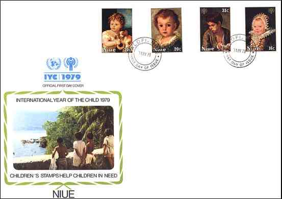
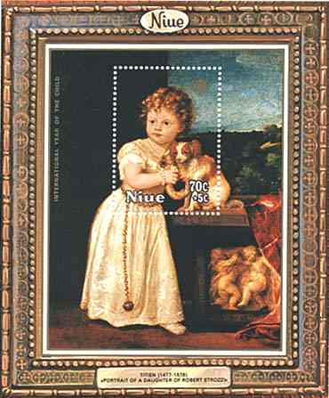
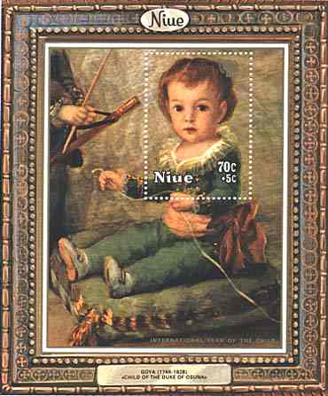
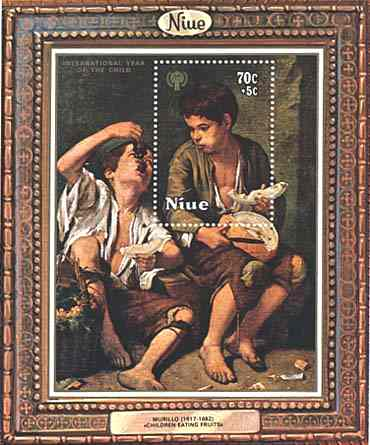
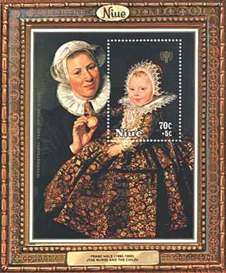

Children's Paintings on Stamps
Some of the most beautiful sets and souvenir sheets dedicated to Children on Paintings were issued the 31st of May 1979 by the Niue postal administration.

See above the impressive FDC issued by this occasion, reproduced here at above 25% of its original size.
The issue commemorates the International Year of the Child and display the following works of art:
 |
 |
-
Titian (1477 - 1576), Portrait of a Daughter of Robert Strozzi
-
Goya (1746 - 1628), Child of the Duke of Osuna
 |
 |
-
Murillo (1617 - 1682), Children Eating Fruits
-
Franz Hals (1580 - 1666), The Nurse and the Child
I consider these sheets as some of the nicest ever issued.